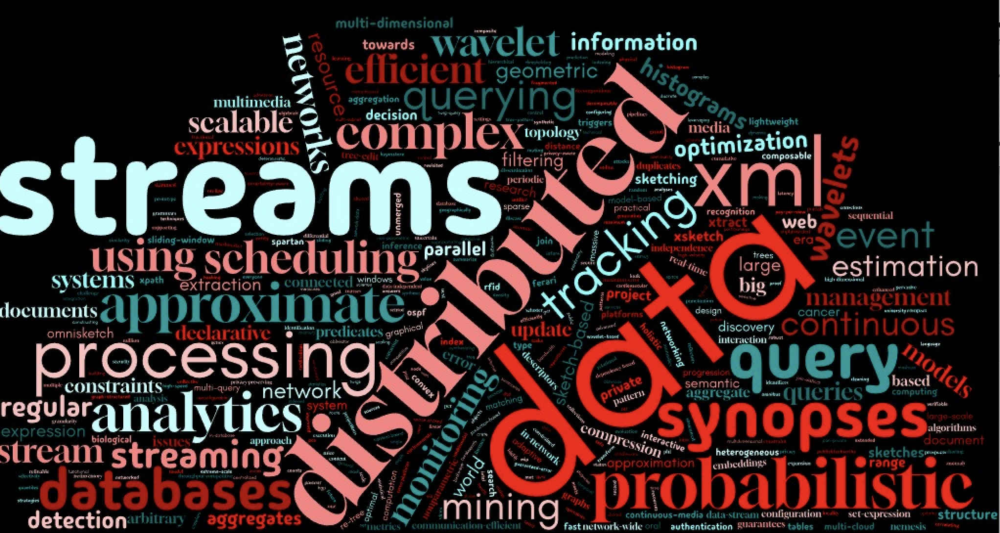
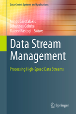
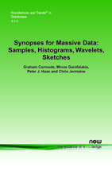

The documents distributed by this server have been provided by the contributing
authors as a means to ensure timely dissemination of scholarly and technical work
on a noncommercial basis. Copyright and all rights therein are maintained by the
authors or by other copyright holders, notwithstanding that they have offered their
works here electronically. It is understood that all persons copying this information
will adhere to the terms and constraints invoked by each author's copyright. These
works may not be reposted without the explicit permission of the copyright holder.
Other restrictions to copying individual documents may apply.
2026
-
Wieger R. Punter, Odysseas Papapetrou, and Minos Garofalakis.
"OmniSketch: Multi-dimensional update stream analytics with arbitrary predicates",
The VLDB Journal,
Vol. 35, No. 1, January 2026.
-
Konstantinos Kechagias, Michele Miranda, Minos Garofalakis, Edwin Morley-Fletcher, Yannis Ioannidis,
Sebastien Bratieres, Machteld J. Boonstra, and Claudio Capelli.
"CardioSynth: privacy-preserving generation and evaluation of multimodal
synthetic data for cardiovascular research",
European Heart Journal - Digital Health,
January 2026. (doi: 10.1093/ehjdh/ztaf143.026)
2025
-
Apostolos Mavrogiannakis, Xian Wang, Ioannis Demertzis, Dimitris Papadopoulos, and
Minos Garofalakis.
"OBLIVIATOR: OBLIVIous Parallel Joins and other OperATORs in Shared Memory Environments",
Proceedings of USENIX Security'2025,
Seattle, WA, August 2025.
-
Antheas Kapenekakis, Daniele Dell'Aglio, Martin Bøgsted,
Minos Garofalakis, and Katja Hose.
"Pasteur: Scaling Privacy-Aware Data Synthesis",
Proceedings of ADBIS'2025,
Tampere, Finland, September 2025.
[** ADBIS'2025 Best Research Paper Award **]
-
Minos Garofalakis.
"A Bird's-Eye View of Complex Streaming Data Analytics" (Invited Keynote Talk),
Proceedings of ACM DEBS'2025,
Gothenburg, Sweden, June 2025.
-
Wieger R. Punter, Odysseas Papapetrou, and Minos Garofalakis.
"OmniSketch: Streaming Data Analytics with Arbitrary Predicates",
ACM SIGMOD Record (Research Highlights), Vol. 54, No. 1, March 2025.
2024
-
Antheas Kapenekakis, Daniele Dell'Aglio, Charles Vesteghem, Laurids Poulsen, Martin Bøgsted,
Minos Garofalakis, and Katja Hose.
"Synthesizing Accurate Relational Data under Differential Privacy",
Proceedings of IEEE BigData'2024,
Washington DC, USA, December 2024.
-
Kostas Filippopolitis, Yannis Foufoulas, Minos Garofalakis, Apostolos Glenis,
Yannis E. Ioannidis, Thanasis-Michail Karampatsis, Maria-Olympia Katsouli,
Evdokia Mailli, Asimakis Papageorgiou-Mariglis, Giorgos Papanikos, George Pikramenos,
Jason Sakellariou, Alkis Simitsis, Pauline Ducouret, Philippe Ryvlin, and Manuel-Guy Spuhler.
"MIP: Advanced Data Processing and Analytics for Science and Medicine"
(demo paper),
Proceedings of EDBT'2024, Paestum, Italy, March 2024.
[** EDBT'2024 Best Demonstration Award **]
2023
-
Wieger R. Punter, Odysseas Papapetrou, and Minos Garofalakis.
"OmniSketch: Efficient Multi-Dimensional High-Velocity Stream Analytics with Arbitrary Predicates",
Proceedings of the VLDB Endowment (PVLDB),
Vol. 17, No.3, 2023-2024.
(to be presented at VLDB'2024, Guangzhou, China, August 2024)
[** VLDB'2024 Best Research Paper Award **]
-
Minos Garofalakis.
"Have your data and share it too: Private data analytics at scale" (Invited Keynote Talk),
Proceedings of IEEE BigData'2023,
Sorrento, Italy, December 2023.
2022
2021
-
Graham Cormode, Minos Garofalakis, and Michael Shekelyan.
"Data-Independent Space Partitionings for Summaries",
Proceedings of ACM PODS'2021,
Xi'an, Shaanxi, China, June 2021.
-
Michael Shekelyan, Anton Dignos, Johann Gamper, and Minos Garofalakis.
"Approximating Multidimensional Range Counts with Maximum Error Guarantees",
Proceedings of IEEE ICDE'2021, Chania, Greece, April 2021.
-
Vassilis Digalakis Jr., George N. Karystinos, and Minos Garofalakis.
"Improved Pan-Private Stream Density Estimation",
arXiv:2111.08784 [cs.CR], November 2021.
2020
-
Nikos Giatrakos, Elias Alevizos, Alexander Artikis, Antonios Deligiannakis, and Minos Garofalakis.
"Complex Event Recognition in the Big Data Era: A Survey",
The VLDB Journal,
Vol. 29, No. 1, 2020.
-
Ioannis Flouris, Nikos Giatrakos, Antonios Deligiannakis, and Minos Garofalakis.
"Network-Wide Complex Event Processing over Geographically Distributed Data Sources",
Information Systems,
Vol. 88, 2020.
-
Nikos Giatrakos, Antonios Deligiannakis, Minos Garofalakis,
and Yannis Kotidis.
"Omnibus Outlier Detection in Sensor Networks using Windowed Locality Sensitive Hashing",
Future Generation Computer Systems,
Vol. 110, 2020.
-
Nikos Giatrakos, David Arnu, Theodoros Bitsakis, Antonios Deligiannakis, Minos Garofalakis, Ralf Klinkenberg, Aris Konidaris, Antonis Kontaxakis, Yannis Kotidis, Vasilis Samoladas, Alkis Simitsis, George Stamatakis, Fabian Temme, Mate Torok, Edwin Yaqub, Arnau Montagud, Miguel Ponce, Holger Arndt, and Stefan Burkard.
"INforE: Interactive Cross-platform Analytics for Everyone"
(demo paper),
Proceedings of
ACM CIKM'2020,
October 2020.
[** CIKM'2020 Best Demonstration Award **]
2019
-
Vasilis Samoladas and Minos Garofalakis.
"Functional Geometric Monitoring for Distributed Streams",
Proceedings of
EDBT'2019,
Lisbon, Portugal, March 2019.
-
Grigorios Chrysos, Odysseas Papapetrou, Dionisios Pnevmatikatos, Apostolos Dollas, and Minos Garofalakis.
"Data stream statistics over sliding windows: How to summarize 150 Million updates per second on a single node",
Proceedings of
FPL'2019,
Barcelona, Spain, September 2019.
-
Nikos Giatrakos, Alexander Artikis, Antonios Deligiannakis, and Minos Garofalakis.
"Uncertainty-Aware Event Analytics over Distributed Settings"
(Industrial Track paper),
Proceedings of
DEBS'2019,
Darmstadt, Germany, June 2019.
-
Nikos Giatrakos, Nikos Katzouris, Antonios Deligiannakis, Alexander Artikis, Minos Garofalakis,
George Paliouras, Holger Arndt, Raffaele Grasso, Ralf Klinkenberg, Miguel Ponce De Leon,
Gian Gaetano Tartaglia, Alfonso Valencia, and Dimitrios Zissis.
"Interactive Extreme-Scale Analytics towards Battling Cancer",
IEEE Technology and Society Magazine,
Vol. 38, No. 2, 2019.
2018
-
Ioannis Demertzis, Stavros Papadopoulos, Odysseas Papapetrou, Antonios Deligiannakis, Minos Garofalakis,
and Charalampos Papamanthou.
"Practical Private Range Search in Depth",
ACM Transactions on Database Systems,
Vol. 43, No. 1, March 2018.
(Best of SIGMOD'2016 Special Issue)
-
Odysseas Papapetrou and Minos Garofalakis.
"Monitoring Distributed Fragmented Skylines",
Distributed and Parallel Databases,
Vol. 36, No.4, 2018.
-
Nikos Giatrakos, Antonios Deligiannakis, Minos Garofalakis,
Daniel Keren, and Vasilis Samoladas.
"Scalable Approximate Query Tracking over Highly Distributed Data Streams with Tunable Accuracy Guarantees",
Information Systems,
Vol. 76, 2018.
2017
-
Ekaterini Ioannou and Minos Garofalakis.
"Holistic Query Processing over Information Extraction Pipelines",
Proceedings of the VLDB Endowment (PVLDB), Vol. 11, No. 2, pp. 217-229, 2017.
(presented at
VLDB'2018,
Rio de Janeiro, Brazil, August 2018)
-
Nikos Giatrakos, Alexander Artikis, Antonios Deligiannakis, and Minos Garofalakis,
"Complex Event Recognition in the Big Data Era"
(tutorial abstract),
Proceedings of the VLDB Endowment (PVLDB), Vol. 10, No. 12, pp. 1996-1999, 2017.
(presented at
VLDB'2017,
Munich, Germany, August 2017)
[Slides
(pdf)]
-
Minos Garofalakis and Vasilis Samoladas.
"Distributed Query Monitoring via Convex Analysis: Towards Composable Safe Zones",
Proceedings of
ICDT'2017,
Venice, Italy, March 2017.
[** Invited to the "Best of ICDT'2017" Special Issue of
Theory of Computing Systems **]
-
Ioannis Flouris, Nikos Giatrakos, Antonios Deligiannakis, Minos Garofalakis,
Michael Kamp, and Michael Mock.
"Issues in Complex Event Processing: Status and Prospects in the Big Data Era",
Journal of Systems and Software,
127:217-236, 2017.
2016

-
Minos Garofalakis, Johannes Gehrke, and Rajeev Rastogi (Eds.).
"Data Stream Management -- Processing High-Speed Data Streams",
Springer-Verlag, New York (Data-Centric Systems and Applications Series),
July 2016 (ISBN 978-3-540-28607-3).
-
Ioannis Demertzis, Stavros Papadopoulos, Odysseas Papapetrou, Antonios Deligiannakis, and Minos Garofalakis.
"Practical Private Range Search Revisited",
Proceedings of
ACM SIGMOD'2016,
San Francisco, California, June 2016.
[** Invited to
ACM Transactions on Database Systems **]
-
Nikos Giatrakos, Antonios Deligiannakis, and Minos Garofalakis.
"Scalable Approximate Query Tracking over Highly Distributed Data Streams",
Proceedings of
ACM SIGMOD'2016,
San Francisco, California, June 2016.
-
Ioannis Flouris, Vasiliki Manikaki, Nikos Giatrakos, Antonios Deligiannakis, Minos Garofalakis,
Michael Mock, Sebastian Bothe, Inna Skarbovsky, Fabiana Fournier, Marko Štajcer, Tomislav Križan,
Jonathan Yom-Tov, and Taji Ćurin.
"FERARI: A Prototype for Complex Event Processing over Streaming Multi-Cloud Platforms"
(demo paper),
Proceedings of
ACM SIGMOD'2016,
San Francisco, California, June 2016.
-
Ioannis Flouris, Vasiliki Manikaki, Nikos Giatrakos, Antonios Deligiannakis, Minos Garofalakis,
Michael Mock, Sebastian Bothe, Inna Skarbovsky, Fabiana Fournier, Marko Štajcer, Tomislav Križan,
Jonathan Yom-Tov, and Marijo Volarevic.
"Complex Event Processing over Streaming Multi-Cloud Platforms - The FERARI Approach"
(demo paper),
Proceedings of
ACM DEBS'2016,
Irvine, California, June 2016.
-
Apostolos Nydriotis, Pavlos Malakonakis, Nikos Pavlakis, Grigorios Chrysos, Ekaterini Ioannou,
Euripides Sotiriades, Minos Garofalakis, and Apostolos Dollas.
"Leveraging Reconfigurable Computing in Distributed Real-time Computation Systems",
Proceedings of
BDPR'2016
(EDBT/ICDT Workshops),
Bordeaux, France, March 2016.
2015
-
Minos Garofalakis, Etienne Riviere, Luis Veiga, Anita Sobe (Eds.).
Proceedings of the 5th International Workshop on Cloud Data and Platforms, CloudDP@EuroSys 2015,
Bordeaux, France, April 2015.
(ACM 2015, ISBN 978-1-4503-3478-5)
-
Arnon Lazerson, Izchak Sharfman, Daniel Keren, Assaf Schuster, Minos Garofalakis, and Vasilis Samoladas.
"Monitoring Distributed Streams using Convex Decompositions",
Proceedings of the VLDB Endowment (PVLDB),
Vol. 8, No. 5, pp. 545-556, 2015.
(presented at
VLDB'2015,
Kohala Coast, Hawaii, August 2015)
-
Ioannis Flouris, Nikos Giatrakos, Minos Garofalakis, and Antonios Deligiannakis.
``Issues in Complex Event Processing Systems'',
Proceedings of
RTStreams'2015,
Helsinki, Finland, August 2015.
[** Invited to
Journal of Systems and Software **]
-
Ekaterini Ioannou and Minos Garofalakis.
"Query Analytics over Probabilistic Databases with Unmerged Duplicates",
IEEE Transactions on Knowledge and Data Engineering,
Vol. 27, No. 8, August 2015.
-
Odysseas Papapetrou, Minos Garofalakis, and Antonios Deligiannakis.
"Sketching Distributed Sliding-Window Data Streams",
The VLDB Journal,
Vol. 24, No. 3, June 2015.
-
Minos Garofalakis.
"Approximate Geometric Query Tracking over Distributed Streams",
IEEE Data Engineering Bulletin,
Vol. 38, No. 3, September 2015
(Special Issue on Approximate Query Processing and Applications),
pp. 103-112.
-
Chee-Yong Chan, Minos Garofalakis, and Rajeev Rastogi.
"Indexed Regular Expression Matching",
Entry in:
Encyclopedia of Algorithms
(Ming-Yang Kao, Ed.), Springer, 2015.
2014
-
Jianzhong Li, Xiaoyang Sean Wang, Minos Garofalakis, Ian Soboroff, Torsten Suel, Min Wang (Eds.).
Proceedings of the 23rd ACM International Conference on Conference on Information and Knowledge
Management (CIKM'2014),
Shanghai, China, November 3-7, 2014.
(ACM 2014, ISBN 978-1-4503-2598-1)
-
Sihem Amer-Yahia, Vassilis Christophides, Anastasios Kementsietsidis,
Minos Garofalakis, Stratos Idreos, and Vincent Leroy
(Eds.).
Proceedings of the 17th International Conference on Extending Database Technology (EDBT),
Athens, Greece, March 2014. (OpenProceedings.org 2014)
-
Odysseas Papapetrou and Minos Garofalakis.
"Continuous Fragmented Skylines over Distributed Streams",
Proceedings of
IEEE ICDE'2014,
Chicago, IL, March 2014.
-
Ekaterini Ioannou and Minos Garofalakis.
"Analytics over Probabilistic Unmerged Duplicates",
Proceedings of
SUM'2014,
Oxford, UK, September 2014.
(short paper)
-
Minos Garofalakis.
"Querying Big, Dynamic, Distributed Data" (Invited Keynote Talk),
Proceedings of
DOLAP'2014,
Shanghai, China, November 2014.
-
Minos Garofalakis.
"Querying Distributed Data Streams" (Invited Keynote Talk),
Proceedings of
ADBIS'2014,
Ohrid, Republic of Macedonia, September 2014.
-
Kalliopi D. Kalantzaki, Ekaterini S. Bei, K. P. Exarchos,
Michalis Zervakis, Minos Garofalakis, and D. I. Fotiadis.
"Nonparametric Network Design and Analyses of Disease Genes in Oral Cancer Progression",
IEEE Journal of Biomedical and Health Informatics,
Vol. 18, No. 2, March 2014.
-
Nikos Giatrakos, Antonios Deligiannakis, Minos Garofalakis, Izchak Sharfman,
and Assaf Schuster.
"Distributed Geometric Query Monitoring using Prediction Models",
ACM Transactions on Database Systems,
Vol. 39, No. 2, May 2014.
-
Stavros Papadopoulos, Graham Cormode, Antonios Deligiannakis, and Minos Garofalakis.
"Lightweight Query Authentication on Streams",
ACM Transactions on Database Systems,
Vol. 39, No. 4, December 2014.
(SIGMOD/PODS'2013 Special Issue).
2013
-
Graham Cormode, Ke Yi, Antonios Deligiannakis, and Minos Garofalakis
(Eds.).
Proceedings of the First International Workshop on Big Dynamic Distributed Data (BD3) -- Co-located with VLDB'2013,
Riva del Garda, Italy, August 30, 2013.
(ISSN 1613-0073)
-
Minos Garofalakis, Daniel Keren, and Vasilis Samoladas.
"Sketch-based Geometric Monitoring of Distributed Stream Queries",
Proceedings of
VLDB'2013
(PVLDB, Vol. 6, No. 10),
Trento, Italy, August 2013.
-
Stavros Papadopoulos, Graham Cormode, Antonios Deligiannakis, and Minos Garofalakis.
"Lightweight Authentication of Linear Algebraic Queries on Data Streams",
Proceedings of
ACM SIGMOD'2013,
New York, New York, June 2013.
[** Invited to
ACM Transactions on Database Systems **]
-
Kalliopi D. Kalantzaki, Ekaterini S. Bei, K. P. Exarchos,
Michalis Zervakis, D. I. Fotiadis, and Minos Garofalakis.
"Identification of altered MET network in Oral Cancer Progression based on Nonparametric Network Design",
Proceedings of
IEEE EMBC'2013,
Osaka, Japan, July 2013.
-
Kalliopi D. Kalantzaki, Ekaterini S. Bei, Minos Garofalakis, and Michalis Zervakis.
"Biological Interaction Networks based on Non-Parametric Estimation",
International Journal of Biomedical Engineering and Technology,
Vol. 13, No. 4, 2013.
-
Stavros Christodoulakis, Minos Garofalakis, Euripides G.M. Petrakis, Antonios Deligiannakis, Vasilis Samoladas,
Ekaterini Ioannou, Odysseas Papapetrou, and Stelios Sotiriadis.
"Data Management Research at the Technical University of Crete",
ACM SIGMOD Record,
Vol. 42, No. 4, December 2013.
2012

-
Graham Cormode, Minos Garofalakis, Peter J. Haas, and Christopher M. Jermaine.
"Synopses for Massive Data: Samples, Histograms, Wavelets, Sketches",
Foundations and Trends in Databases, Vol. 4, No. 1-3, pp. 1-294, 2012.
(ISBN 978-1601985163)
-
Odysseas Papapetrou, Minos Garofalakis, and Antonios Deligiannakis.
"Sketch-based Querying of Distributed Sliding-Window Data Streams",
Proceedings of
VLDB'2012
(PVLDB, Vol. 5, No. 10),
Istanbul, Turkey, August 2012.
-
Nikos Giatrakos, Antonios Deligiannakis, Minos Garofalakis, Izchak Sharfman,
and Assaf Schuster.
"Prediction-based Geometric Monitoring over Distributed Data Streams",
Proceedings of
ACM SIGMOD'2012,
Scottsdale, Arizona, May 2012.
-
Kalliopi D. Kalantzaki, Ekaterini S. Bei, Minos Garofalakis,
and Michalis Zervakis.
"Biological Interaction Networks Based on Sparse Temporal Expansion of Graphical Models",
Proceedings of
IEEE BIBE'2012,
Larnaca, Cyprus, November 2012.
2011
-
Daisy Zhe Wang, Michael J. Franklin, Minos Garofalakis, Joseph M. Hellerstein, and Michael L. Wick.
"Hybrid In-Database Inference for Declarative Information Extraction",
Proceedings of
ACM SIGMOD'2011,
Athens, Greece, June 2011.
-
Vibhor Rastogi, Nilesh Dalvi, and Minos Garofalakis.
"Large-Scale Collective Entity Matching",
Proceedings of
VLDB'2011
(PVLDB, Vol. 4, No. 4),
Seattle, Washington, August 2011.
2010
-
Daisy Zhe Wang, Michael J. Franklin, Minos Garofalakis, and Joseph M. Hellerstein.
"Querying Probabilistic Information Extraction",
Proceedings of
VLDB'2010
(PVLDB, Vol. 3),
Singapore, September 2010.
[Daisy's talk slides
(pdf)]
-
Daisy Zhe Wang, Eirinaios Michelakis, Michael J. Franklin, Minos Garofalakis, and Joseph M. Hellerstein.
"Probabilistic Declarative Information Extraction",
Proceedings of
IEEE ICDE'2010,
Long Beach, California, USA, March 2010.
(short paper)
[Daisy's talk slides
(pdf)]
-
Evangelos E. Papalexakis, Nicholas D. Sidiropoulos, and Minos Garofalakis.
"Reviewer Profiling Using Sparse Matrix Regression",
OEDM'2010,
Sydney, Australia, December 2010.
-
Graham Cormode and Minos Garofalakis.
"Histograms and Wavelets on Probabilistic Data",
IEEE Transactions on Knowledge and Data Engineering,
2010
("Best of ICDE'2009" Special Issue).
2009
-
Boon Thau Loo, Tyson Condie, Minos Garofalakis, David E. Gay, Joseph M. Hellerstein, Petros Maniatis,
Raghu Ramakrishnan, Timothy Roscoe, and Ion Stoica.
"Declarative Networking",
Communications of the ACM (Research Highlights),
Vol. 52, No. 11,
November 2009.
[
Foreword by Peter Druschel]
-
Alin Dobra, Minos Garofalakis, Johannes Gehrke, and Rajeev Rastogi.
"Multi-Query Optimization for Sketch-Based Estimation",
Information Systems,
Vol. 34, No. 2, April 2009.
-
Graham Cormode, Antonios Deligiannakis, Minos Garofalakis, and Andrew McGregor.
"Probabilistic Histograms for Probabilistic Data",
Proceedings of
VLDB'2009
(PVLDB, Vol. 2),
Lyon, France, August 2009.
[Antonis' talk slides
(pdf)]
-
Graham Cormode and Minos Garofalakis.
"Histograms and Wavelets on Probabilistic Data",
Proceedings of
IEEE ICDE'2009,
Shanghai, China, March 2009.
[Preliminary arxiv/CoRR Tech. Report version:
arXiv:0806.1071v1 [cs.DB]]
[Graham's talk slides
(pdf)]
[** ICDE'2009 Best Paper Award **]
[ award photo ]
-
Minos Garofalakis.
"Distributed Data Streams",
Entry in:
Encyclopedia of Database Systems
(Ling Liu and M. Tamer Ozsu, Eds.), Springer, 2009.
-
Minos Garofalakis.
"Wavelets on Streams",
Entry in:
Encyclopedia of Database Systems
(Ling Liu and M. Tamer Ozsu, Eds.), Springer, 2009.
-
Minos Garofalakis.
"The Discrete Wavelet Transform and Wavelet Synopses",
Entry in:
Encyclopedia of Database Systems
(Ling Liu and M. Tamer Ozsu, Eds.), Springer, 2009.
2008
-
Graham Cormode and Minos Garofalakis.
"Approximate Continuous Querying over Distributed Streams",
ACM Transactions on Database Systems,
Vol. 33, No. 2, June 2008.
-
Shawn R. Jeffery, Michael J. Franklin, and Minos Garofalakis.
"An Adaptive RFID Middleware for Supporting Metaphysical
Data Independence",
The VLDB Journal,
Vol. 17, No. 2, March 2008 ("Best of VLDB'2006" Special Issue).
-
Daisy Zhe Wang, Eirinaios Michelakis, Minos Garofalakis, and Joseph M. Hellerstein.
"BAYESSTORE: Managing Large, Uncertain Data Repositories with
Probabilistic Graphical Models",
Proceedings of
VLDB'2008
(PVLDB, Vol. 1),
Auckland, New Zealand, August 2008.
[Daisy's talk slides
(pdf)]
-
Ashwin Machanavajjhala, Erik Vee, Minos Garofalakis, and Jayavel Shanmugasundaram.
"Scalable Ranked Publish/Subscribe",
Proceedings of
VLDB'2008,
Auckland, New Zealand, August 2008.
[Erik's talk slides
(pdf)]
-
Graham Cormode and Minos Garofalakis.
"Streaming in a Connected World: Querying and Tracking Distributed Data Streams"
(tutorial abstract),
Proceedings of
EDBT'2008,
Nantes, France, March 2008.
-
Chee-Yong Chan, Minos Garofalakis, and Rajeev Rastogi.
"Regular Expression Indexing",
Entry in:
Encyclopedia of Algorithms
(Ming-Yang Kao, Ed.), Springer, 2008.
-
Minos Garofalakis and Neoklis Polyzotis.
"Very Large Databases",
Chapter in:
Wiley Encyclopedia of Computer Science and Engineering
(Benjamin W. Wah, Ed.), John Wiley & Sons, Inc., 2008.
2007
-
Christoph Koch, Johannes Gehrke, Minos Garofalakis, Divesh Srivastava,
Karl Aberer, Anand Deshpande, Daniela Florescu, Chee-Yong Chan, Venkatesh Ganti,
Carl-Christian Kanne, Wolfgang Klas, and Erich J. Neuhold (Editors).
Proceedings of the 33rd International Conference on Very Large Data Bases (VLDB'2007),
University of Vienna, Austria, September 23-27, 2007, ACM Publications.
(ISBN 978-1-59593-649-3)
-
Antonios Deligiannakis, Minos Garofalakis, and Nick Roussopoulos.
"Extended Wavelets for Multiple Measures",
ACM Transactions on Database Systems,
Vol. 32, No. 2, June 2007.
[electronic appendix (pdf)]
-
Rob Ennals, Eric Brewer, Minos Garofalakis,
Michael Shadle, and Prashant Gandhi.
"Intel Mash Maker: Join the Web",
ACM SIGMOD Record,
Vol. 36, No. 4, December 2007, pp. 27-33.
-
Yahoo! Research Community Systems Group.
"Community Systems Research at Yahoo!",
ACM SIGMOD Record,
Vol. 36, No. 3, September 2007, pp. 47-54.
-
Graham Cormode and Minos Garofalakis.
"Sketching Probabilistic Data Streams",
Proceedings of
ACM SIGMOD'2007,
Beijing, China, June 2007.
-
Ryan J. Huebsch, Minos Garofalakis, Joseph M. Hellerstein, and Ion Stoica.
"Sharing Aggregate Computation for Distributed Queries",
Proceedings of
ACM SIGMOD'2007,
Beijing, China, June 2007.
[Preliminary UC-Berkeley Tech. Report version:
UCB/EECS-2006-98]
[Ryan's talk slides
(ppt)
(pdf)]
-
Robert Ennals and Minos Garofalakis.
"MashMaker: Mashups for the Masses"
(demo paper),
Proceedings of
ACM SIGMOD'2007,
Beijing, China, June 2007.
-
Graham Cormode and Minos Garofalakis.
"Streaming in a Connected World: Querying and Tracking Distributed Data Streams"
(tutorial abstract),
Proceedings of
ACM SIGMOD'2007,
Beijing, China, June 2007.
-
Minos Garofalakis, Joseph M. Hellerstein, and Petros Maniatis.
"Proof Sketches: Verifiable In-Network Aggregation",
Proceedings of
IEEE ICDE'2007,
Istanbul, Turkey, April 2007.
[my talk slides
(ppt)
(pdf)]
-
Raphael Chand, Pascal Felber, and Minos Garofalakis.
"Tree-Pattern Similarity Estimation for Scalable Content-based Routing",
Proceedings of
IEEE ICDE'2007,
Istanbul, Turkey, April 2007.
[Raphael's talk slides
(ppt)
(pdf)]
-
Ling Huang, XuanLong Nguyen, Minos Garofalakis, Joseph M. Hellerstein, Michael I. Jordan,
Anthony D. Joseph, and Nina Taft.
"Communication-Efficient Online Detection of Network-Wide Anomalies",
Proceedings of
IEEE INFOCOM'2007,
Anchorage, Alaska, May 2007.
[Ling's talk slides
(ppt)
(pdf)]
-
Wei Wang, Minos Garofalakis, and Kannan Ramchandran.
"Distributed Sparse Random Projections for Refinable Approximation",
Proceedings of
IPSN'2007,
Cambridge, Massachusetts, April 2007.
-
Ling Huang, Minos Garofalakis, Anthony D. Joseph, and Nina Taft.
"Communication-Efficient Tracking of Distributed
Cumulative Triggers",
Proceedings of
ICDCS'2007,
Toronto, Canada, June 2007.
[Preliminary UC-Berkeley Tech. Report version:
UCB/EECS-2006-139]
-
Sumit Ganguly, Minos Garofalakis, Rajeev Rastogi, and Krishan Sabnani.
"Streaming Algorithms for Robust, Real-time Detection
of DDoS Attacks",
Proceedings of
ICDCS'2007,
Toronto, Canada, June 2007.
[Krishan's talk slides
(ppt)
(pdf)]
-
Joseph M. Hellerstein, Tyson Condie, Minos Garofalakis, Boon Thau Loo, Petros Maniatis,
Timothy Roscoe, and Nina Taft.
"Public Health for the Internet (PHI) -- Towards a New Grand Challenge
for Information Management",
Proceedings of
CIDR'2007,
Asilomar, California, January 2007.
[Joe's talk slides
(pdf)]
-
Yuri Breitbart, Minos Garofalakis, Anupam Gupta, Amit Kumar, and Rajeev Rastogi.
"On Configuring BGP Route Reflectors",
Proceedings of
COMSWARE'2007,
Bangalore, India, January 2007.
-
Eirinaios Michelakis, Daisy Zhe Wang, Minos Garofalakis, and Joseph M. Hellerstein.
"Granularity Conscious Modeling for Probabilistic Databases",
DUNE'2007,
Omaha, Nebraska, October 2007.
-
Ling Huang, Minos Garofalakis, Anthony D. Joseph, and Nina Taft.
"Approximate Decision Making in Large-Scale Distributed
Systems" (poster),
Proceedings of
MLSys'2007,
Whistler, B.C., December 2007.
2006
-
Neoklis Polyzotis and Minos Garofalakis.
"XSKETCH Synopses for XML Data Graphs",
ACM Transactions on Database Systems,
Vol. 31, No. 3, September 2006, pp. 1014-1063.
[electronic appendix (pdf)]
-
Minos Garofalakis.
"Wavelet-based Approximation Techniques in Database Systems'',
IEEE Signal Processing Magazine (Exploratory DSP Column),
November 2006.
(Invited contribution)
-
Minos Garofalakis. Kurt P. Brown, Michael J. Franklin, Joseph M. Hellerstein, Daisy Zhe Wang
Eirinaios Michelakis, Liviu Tancau, Eugene Wu, Shawn R. Jeffery, and Ryan Aipperspach.
"Probabilistic Data Management for Pervasive Computing: The Data Furnace Project",
IEEE Data Engineering Bulletin,
Vol. 29, No. 1, March 2006
(Special Issue on Probabilistic Data Management),
pp. 57-63.
-
Shawn R. Jeffery, Minos Garofalakis, and Michael J. Franklin.
"Adaptive Cleaning for RFID Data Streams",
Proceedings of
VLDB'2006,
Seoul, Korea, September 2006.
[Shawn's talk slides
(ppt)]
[** Invited to the "Best of VLDB'2006" Special Issue of
The VLDB Journal **]
-
Frederick Reiss, Minos Garofalakis, and Joseph M. Hellerstein.
"Compact Histograms for Hierarchical Identifiers",
Proceedings of
VLDB'2006,
Seoul, Korea, September 2006.
[Fred's talk slides
(ppt)]
-
Graham Cormode and Minos Garofalakis.
"Streaming in a Connected World: Querying and Tracking Distributed Data Streams"
(tutorial abstract),
Proceedings of
VLDB'2006,
Seoul, Korea, September 2006.
-
Boon Thau Loo, Tyson Condie, Minos Garofalakis, David E. Gay, Joseph M. Hellerstein,
Petros Maniatis, Raghu Ramakrishnan, Timothy Roscoe, and Ion Stoica.
"Declarative Networking: Language, Execution, and Optimization",
Proceedings of
ACM SIGMOD'2006,
Chicago. Illinois, June 2006.
[Boon's talk slides
(ppt)]
[** ACM Digital Review page **]
-
Graham Cormode, Minos Garofalakis, and Dimitris Sacharidis.
"Fast Approximate Wavelet Tracking on Streams",
Proceedings of EDBT'2006,
Munich, Germany, March 2006.
[Dimitris' talk slides
(pdf)]
-
Neoklis Polyzotis and Minos Garofalakis.
"XCluster Synopses for Structured XML Content",
Proceedings of ICDE'2006,
Atlanta, Georgia, April 2006.
-
Ling Huang, XuanLong Nguyen, Minos Garofalakis, Michael I. Jordan, Anthony D. Joseph, and Nina Taft.
"In-Network PCA and Anomaly Detection",
Proceedings of
NIPS'2006,
Vancouver, B.C., December 2006.
[
Longer version (with proofs)]
[Preliminary UC-Berkeley Tech. Report version:
UCB/EECS-2006-99]
-
Ling Huang, Minos Garofalakis, Joseph M. Hellerstein, Anthony D. Joseph, and Nina Taft.
"Toward Sophisticated Detection with Distributed Triggers",
Proceedings of
MineNet'2006,
Pisa, Italy, September 2006.
2005
-
Minos Garofalakis and Amit Kumar.
"Wavelet Synopses for General Error Metrics",
ACM Transactions on Database Systems,
Vol. 30, No. 4, December 2005
(SIGMOD/PODS'2004 Special Issue).
-
Minos Garofalakis and Amit Kumar.
"XML Stream Processing Using Tree-Edit Distance Embeddings",
ACM Transactions on Database Systems,
Vol. 30, No. 1, March 2005 (SIGMOD/PODS'2003 Special Issue),
pp. 279-332.
-
Graham Cormode and Minos Garofalakis.
"Efficient Strategies for Continuous Distributed Tracking Tasks",
IEEE Data Engineering Bulletin,
Vol. 28, No. 1, March 2005
(Special Issue on In-Network Query Processing),
pp. 33-39.
-
Graham Cormode and Minos Garofalakis.
"Sketching Streams Through the Net: Distributed Approximate
Query Tracking",
Proceedings of VLDB'2005,
Trondheim, Norway, August 2005, pp. 13-24.
[my talk slides
(ppt)
(pdf)]
[** Invited to the "Best of VLDB'2005" Special Issue of
The VLDB Journal **]
-
Graham Cormode, Minos Garofalakis, S. Muthukrishnan, and Rajeev Rastogi.
"Holistic Aggregates in a Networked World: Distributed Tracking of
Approximate Quantiles",
Proceedings of ACM SIGMOD'2005,
Baltimore, Maryland, June 2005, pp. 25-36.
[Graham's talk slides
(pdf)]
-
Sumit Ganguly, Minos Garofalakis, Amit Kumar, and Rajeev Rastogi.
"Join-Distinct Aggregate Estimation over Update Streams",
Proceedings of ACM PODS'2005,
Baltimore, Maryland, June 2005.
[my talk slides
(ppt)
(pdf)]
-
Antonios Deligiannakis, Minos Garofalakis, and Nick Roussopoulos.
"A Fast Approximation Scheme for Probabilistic Wavelet Synopses",
Proceedings of
SSDBM'2005,
Santa Barbara, California, June 2005, pp. 243-252.
[Preliminary UMD Tech. Report version:
UMCP-CSD-CS TR #4643]
-
David Maier, Peter A. Tucker, and Minos Garofalakis.
"Filtering, Punctuation, Windows and Synopses",
Chapter in:
Stream Data Management
(N. Chaudhry, K. Shaw, M. Abdelguerfi, Eds.),
Springer (Advances in Database Systems Series), 2005.
2004
-
Minos Garofalakis and Phillip B. Gibbons.
"Probabilistic Wavelet Synopses",
ACM Transactions on Database Systems,
Vol. 29, No. 1, March 2004 (SIGMOD/PODS'2002 Special Issue),
pp. 43-90.
-
Sumit Ganguly, Minos Garofalakis, and Rajeev Rastogi.
"Tracking Set-Expression Cardinalities over Continuous Update Streams",
The VLDB Journal,
Vol. 13, No. 4, December 2004 (Special Issue on Data Stream Processing),
pp. 354-369.
-
Yuri Breitbart, Minos Garofalakis, Ben Jai, Cliff Martin, Rajeev Rastogi, and Avi Silberschatz.
"Topology Discovery in Heterogeneous IP Networks: The NetInventory System",
IEEE/ACM Transactions on Networking,
Vol. 12, No 3, June 2004, pp. 401-414.
-
Abhinandan Das, Sumit Ganguly, Minos Garofalakis, and Rajeev Rastogi.
"Distributed Set-Expression Cardinality Estimation",
Proceedings of VLDB'2004,
Toronto, Canada, August 2004.
[Abhinandan's talk slides
(ppt)]
-
Minos Garofalakis and Amit Kumar.
"Deterministic Wavelet Thresholding for Maximum-Error Metrics",
Proceedings of ACM PODS'2004,
Paris, France, June 2004, pp. 166-176.
[my talk slides
(ppt) ]
[** Invited to
ACM Transactions on Database Systems **]
-
Neoklis Polyzotis, Minos Garofalakis, and Yannis Ioannidis.
"Approximate XML Query Answers",
Proceedings of ACM SIGMOD'2004,
Paris, France, June 2004, pp. 263-274.
[Alkis's talk slides
(ppt)]
-
Wenfei Fan, Chee-Yong Chan, and Minos Garofalakis.
"Secure XML Querying with Security Views",
Proceedings of ACM SIGMOD'2004,
Paris, France, June 2004, pp. 587-598.
[Wenfei's talk slides
(ppt)]
-
Alin Dobra, Minos Garofalakis, Johannes Gehrke, and Rajeev Rastogi.
"Sketch-Based Multi-Query Processing over Data Streams",
Proceedings of EDBT'2004,
Heraklion-Crete, Greece, March 2004, pp. 551-568.
[my talk slides
(ppt) ]
-
Sumit Ganguly, Minos Garofalakis, and Rajeev Rastogi.
"Processing Data-Stream Join Aggregates Using Skimmed Sketches",
Proceedings of EDBT'2004,
Heraklion-Crete, Greece, March 2004, pp. 569-586.
[my talk slides
(ppt) ]
-
Neoklis Polyzotis, Minos Garofalakis, and Yannis Ioannidis.
"Selectivity Estimation for XML Twigs",
Proceedings of IEEE ICDE'2004,
Boston, Massachusetts, March 2004, pp. 264-275.
-
Wenfei Fan, Minos Garofalakis, Ming Xiong, and Xibei Jia.
"Composable XML Integration Grammars",
Proceedings of ACM CIKM'2004,
Washington, D.C., November 2004, pp. 2-11.
-
Minos Garofalakis, Ioana Manolescu, Marco Mesiti, George Mihaila, Ralf Schenkel,
Bhavani Thuraisingham, and Vasilis Vassalos.
"What's Next in XML and Databases?"
(Panel Abstract,
DataX'2004 Workshop),
In: Current Trends in Database Technology -- EDBT 2004 Workshops,
Springer-Verlag Lecture
Notes in Computer Science (LNCS),
Vol. 3268/2004, pp. 318-324.
-
Natasha Drukh, Neoklis Polyzotis, Minos Garofalakis, and Yossi Matias.
"Fractional XSketch Synopses for XML Databases",
Proceedings of XSym'2004,
Toronto, Canada, August 2004.
-
Neoklis Polyzotis, Minos Garofalakis, and Yannis Ioannidis.
"Approximate Twig-Query Processing",
Proceedings of HDMS'2004,
Athens, Greece, June 2004, pp. 182-194.
[Alkis' talk slides
(zip)]
2003
-
Chee-Yong Chan, Minos Garofalakis, and Rajeev Rastogi.
"RE-Tree: An Efficient Index Structure for Regular Expressions",
The VLDB Journal,
Vol. 12, No. 2, August 2003 ("Best of VLDB'2002" Special Issue),
pp. 102-119.
-
Rajeev Rastogi, Yuri Breitbart, Minos Garofalakis, and Amit Kumar.
"Optimal Configuration of OSPF Aggregates",
IEEE/ACM Transactions on Networking,
Vol. 11, No. 2, April 2003, pp. 181-194.
-
Minos Garofalakis, Aristides Gionis, Rajeev Rastogi, S. Seshadri, and Kyuseok Shim.
"DTD Inference from XML Documents: The XTRACT Approach"
,
IEEE Data Engineering Bulletin,
Vol. 26, No. 3, September 2003 (Special Issue on Structure Discovery),
pp. 18-24.
-
Minos Garofalakis, Dongjoon Hyun, Rajeev Rastogi, and Kyuseok Shim.
"Building Decision Trees with Constraints",
Data Mining and Knowledge Discovery,
Vol. 7, No. 2, April 2003, pp. 187-214.
-
Minos Garofalakis, Aristides Gionis Rajeev Rastogi, S. Seshadri, and Kyuseok Shim.
"XTRACT: Learning Document Type Descriptors from XML Document Collections",
Data Mining and Knowledge Discovery,
Vol. 7, No. 1, January 2003, pp. 23-56.
-
Pascal Felber, Chee-Yong Chan, Minos Garofalakis, and Rajeev Rastogi.
"Scalable Filtering of XML Data for Web Services",
IEEE Internet Computing,
Vol. 7, No. 1, January/February 2003, pp. 49-57.
-
Minos Garofalakis and Amit Kumar.
"Correlating XML Data Streams Using Tree-Edit Distance Embeddings",
Proceedings of ACM PODS'2003,
San Diego, California, June 2003, pp. 143-154.
[my talk slides
(ppt) ]
[** Invited to
ACM Transactions on Database Systems **]
-
Sumit Ganguly, Minos Garofalakis, and Rajeev Rastogi.
"Processing Set Expressions over Continuous Update Streams",
Proceedings of ACM SIGMOD'2003,
San Diego, California, June 2003, pp. 265-276.
[Sumit's talk slides
(ppt)]
-
Yigal Bejerano, Yuri Breitbart, Minos Garofalakis, and Rajeev Rastogi.
"Physical Topology Discovery for Large Multi-Subnet Networks",
Proceedings of IEEE INFOCOM'2003,
San Francisco, California, April 2003, pp. 342-352.
2002
-
Chee-Yong Chan, Pascal Felber, Minos Garofalakis, and Rajeev Rastogi.
"Efficient Filtering of XML Documents with XPath Expressions",
The VLDB Journal,
Vol. 11, No. 4, December 2002 (Special Issue on XML Data Management),
pp. 354-379.
-
Minos Garofalakis, Rajeev Rastogi, and Kyuseok Shim.
"Mining Sequential Patterns with Regular Expression Constraints",
IEEE Transactions on Knowledge and Data Engineering,
Vol. 14, No. 3, May/June 2002, pp. 530-552.
-
Minos Garofalakis, Yannis Ioannidis, Banu Özden, and Avi Silberschatz.
"Competitive On-line Scheduling of Continuous-Media Streams",
Journal of Computer and Systems Sciences,
Vol. 64, No. 2, March 2002, pp. 219-248.
-
Shivnath Babu, Minos Garofalakis, and Rajeev Rastogi.
"SPARTAN: Using Constrained Models for Guaranteed-Error Semantic Compression",
SIGKDD Explorations,
Vol. 4, No. 1, June 2002 (Special Issue on Constraints in Data Mining),
pp. 11-20.
-
Neoklis Polyzotis and Minos Garofalakis.
"Structure and Value Synopses for XML Data Graphs",
Proceedings of VLDB'2002,
Hong Kong, China, August 2002, pp. 466-477.
-
Chee-Yong Chan, Minos Garofalakis, and Rajeev Rastogi.
"RE-Tree: An Efficient Index Structure for Regular Expressions",
Proceedings of VLDB'2002,
Hong Kong, China, August 2002, pp. 251-262.
[** Invited to the "Best of VLDB'2002" Special Issue of
The VLDB Journal **]
-
Chee-Yong Chan, Wenfei Fan, Pascal Felber, Minos Garofalakis, and Rajeev Rastogi.
"Tree Pattern Aggregation for Scalable XML Data Dissemination",
Proceedings of VLDB'2002,
Hong Kong, China, August 2002, pp. 826-837.
[my talk slides
(ppt) ]
-
Minos Garofalakis and Phillip B. Gibbons.
"Wavelet Synopses with Error Guarantees",
Proceedings of ACM SIGMOD'2002,
Madison, Wisconsin, June 2002, pp. 476-487.
[my talk slides
(ppt) ]
[** Invited to
ACM Transactions on Database Systems **]
-
Neoklis Polyzotis and Minos Garofalakis.
"Statistical Synopses for Graph-Structured XML Databases",
Proceedings of ACM SIGMOD'2002,
Madison, Wisconsin, June 2002, pp. 358-369.
-
Alin Dobra, Minos Garofalakis, Johannes Gehrke, and Rajeev Rastogi.
"Processing Complex Aggregate Queries over Data Streams",
Proceedings of ACM SIGMOD'2002,
Madison, Wisconsin, June 2002, pp. 61-72.
-
Rajeev Rastogi, Yuri Breitbart, Minos Garofalakis, and Amit Kumar.
"Optimal Configuration of OSPF Aggregates",
Proceedings of IEEE INFOCOM'2002,
New York City, New York, June 2002, pp. 874-882.
-
Chee-Yong Chan, Pascal Felber, Minos Garofalakis, and Rajeev Rastogi.
"Efficient Filtering of XML Documents with XPath Expressions",
Proceedings of IEEE ICDE'2002,
San Jose, California, February 2002, pp. 235-244.
-
Minos N. Garofalakis, Johannes Gehrke, and Rajeev Rastogi.
"Querying and Mining Data Streams: You Only Get One Look"
(tutorial abstract),
Proceedings of ACM SIGMOD'2002,
Madison, Wisconsin, June 2002, pp. 635.
-
Minos Garofalakis, and Rajeev Rastogi.
"Network Data Mining and Analysis: The NEMESIS Project"
(Invited Industrial Paper),
Proceedings of PAKDD'2002,
Taipei, Taiwan, May 2002, pp. 1-12.
-
Neoklis Polyzotis and Minos Garofalakis.
"XSketch Synopses for XML",
Proceedings of HDMS'2002,
Athens, Greece, July 2002.
[Alkis' talk slides
(ppt)]
2001
-
Kaushik Chakrabarti, Minos Garofalakis, Rajeev Rastogi, and Kyuseok Shim.
"Approximate query processing using wavelets",
The VLDB Journal,
Vol. 10, No. 2-3, September 2001 ("Best of VLDB'2000" Special Issue),
pp. 199-223.
-
Shivnath Babu, Minos Garofalakis, and Rajeev Rastogi.
"SPARTAN: A Model-Based Semantic Compression System for Massive Data Tables",
Proceedings of ACM SIGMOD'2001,
Santa Barbara, California, May 2001, pp. 283-294.
-
Amol Deshpande, Minos Garofalakis, and Rajeev Rastogi.
"Independence is Good: Dependency-Based Histogram Synopses for High-Dimensional Data",
Proceedings of ACM SIGMOD'2001,
Santa Barbara, California, May 2001, pp. 199-210.
-
Yuri Breitbart, Chee-Yong Chan, Minos Garofalakis, Rajeev Rastogi, and Avi Silberschatz.
"Efficiently Monitoring Bandwidth and Latency in IP Networks",
Proceedings of IEEE INFOCOM'2001,
Anchorage, Alaska, April 2001, pp. 933-942.
-
Amol Deshpande, Minos Garofalakis, and Michael I. Jordan.
"Efficient Stepwise Selection in Decomposable Models",
Proceedings of UAI'2001,
Seattle, Washington, August 2001.
-
Shivnath Babu, Minos Garofalakis, Rajeev Rastogi, and Avi Silberschatz.
"Model-Based Semantic Compression for Network-Data Tables",
Proceedings of NRDM'2001,
Santa Barbara, California, May 2001.
-
Minos Garofalakis and Rajeev Rastogi.
"Data Mining Meets Network Management: The NEMESIS Project",
Proceedings of DMKD'2001,
Santa Barbara, California, May 2001.
2000
-
Minos Garofalakis and Rajeev Rastogi.
"Scalable Data Mining with Model Constraints",
SIGKDD Explorations,
Vol. 2, No. 2, December 2000 (Special Issue on Scalable Data Mining),
pp. 39-48.
-
Kaushik Chakrabarti, Minos Garofalakis, Rajeev Rastogi, and Kyuseok Shim.
"Approximate Query Processing Using Wavelets",
Proceedings of VLDB'2000,
Cairo, Egypt, September 2000, pp. 111-122.
[** Invited to the "Best of VLDB'2000" Special Issue of
The VLDB Journal **]
-
Minos Garofalakis, Aristides Gionis, Rajeev Rastogi, S. Seshadri, and Kyuseok Shim.
"XTRACT: A System for Extracting Document Type Descriptors from XML Documents",
Proceedings of ACM SIGMOD'2000,
Dallas, Texas, May 2000, pp. 165-176.
[** ACM Digital Review page **]
-
Minos Garofalakis, Dongjoon Hyun, Rajeev Rastogi, and Kyuseok Shim.
"Efficient Algorithms for Constructing Decision Trees with Constraints",
Proceedings of ACM SIGKDD'2000,
Boston, Massachusetts, August 2000, pp. 335-339.
-
Yuri Breitbart, Minos Garofalakis, Cliff Martin, Rajeev Rastogi, S. Seshadri, and
Avi Silberschatz.
"Topology Discovery in Heterogeneous IP Networks",
Proceedings of IEEE INFOCOM'2000,
Tel-Aviv, Israel, March 2000, pp. 265-274.
1995 -- 1999
-
Minos N. Garofalakis, Rajeev Rastogi, and Kyuseok Shim.
"SPIRIT: Sequential Pattern Mining with Regular Expression Constraints",
Proceedings of VLDB'99,
Edinburgh, Scotland, September 1999, pp. 223-234.
[my talk slides
(ppt.gz) ]
-
Minos N. Garofalakis and Renée J. Miller.
"Very Large Databases",
Chapter in:
Wiley Encyclopedia of Electrical and Electronics Engineering
(John G. Webster, Ed.), Volume 23, pp. 133-139, John Wiley & Sons, Inc., 1999.
-
Minos N. Garofalakis, Rajeev Rastogi, S. Seshadri, and Kyuseok Shim.
"Data Mining and the Web: Past, Present and Future"
(Invited Paper),
Proceedings of WIDM'99,
Kansas City, Missouri, November 1999, pp. 43-47.
-
Minos N. Garofalakis, Sridhar Ramaswamy, Rajeev Rastogi, and Kyuseok Shim.
"Of Crawlers, Portals, Mice, and Men: Is there more to Mining the Web?"
(Panel Abstract),
Proceedings of ACM SIGMOD'99,
Philadelphia, Pennsylvania, May 1999, pp. 504.
-
Minos N. Garofalakis, Banu Özden, and Avi Silberschatz.
"On periodic resource scheduling for continuous-media databases",
The VLDB Journal,
Vol. 7, No. 4, December 1998 (Special Issue on Multimedia Databases),
pp. 206-225.
-
Minos N. Garofalakis.
"Query Scheduling and Optimization in Parallel and Multimedia Databases",
PhD Thesis, University of Wisconsin - Madison,
August 1998.
-
Minos N. Garofalakis, Yannis E. Ioannidis, and Banu Özden.
"Resource Scheduling for Composite Multimedia Objects",
Proceedings of VLDB'98,
New York City, New York, August 1998, pp. 74-85.
[my talk slides
(ps.gz) ]
-
Minos N. Garofalakis, Yannis E. Ioannidis, Banu Özden, and Avi Silberschatz.
"Throughput-Competitive Admission Control for Continuous Media Databases",
Proceedings of ACM PODS'98,
Seattle, Washington, June 1998, pp. 79-88.
[my talk slides
(ps.gz) ]
-
Minos N. Garofalakis, Banu Özden, and Avi Silberschatz.
"On Periodic Resource Scheduling for Continuous Media Databases",
Proceedings of IEEE RIDE'98,
Orlando, Florida, February 1998, pp. 111-120.
-
Minos N. Garofalakis, Banu Özden, and Avi Silberschatz.
"Resource Scheduling in Enhanced Pay-Per-View Continuous Media Databases",
Proceedings of VLDB'97,
Athens, Greece, August 1997, pp. 516-525.
[my talk slides
(ps.gz) ]
-
Minos N. Garofalakis and Yannis E. Ioannidis.
"Parallel Query Scheduling and Optimization with Time- and Space-Shared Resources",
Proceedings of VLDB'97,
Athens, Greece, August 1997, pp. 296-305.
[my talk slides
(ps.gz) ]
-
Minos N. Garofalakis and Yannis E. Ioannidis.
"Multi-dimensional Resource Scheduling for Parallel Queries",
Proceedings of ACM SIGMOD'96,
Montreal, Canada, June 1996, pp. 365-376.
[my talk slides
(ps.gz) ]
-
Minos N. Garofalakis and Yannis E. Ioannidis.
"Scheduling Issues in Multimedia Query Optimization",
ACM Computing Surveys,
Vol. 27, No. 4, December 1995 (Symposium on Multimedia), pp. 590-592.
Page under perpetual construction...
{kind=link}